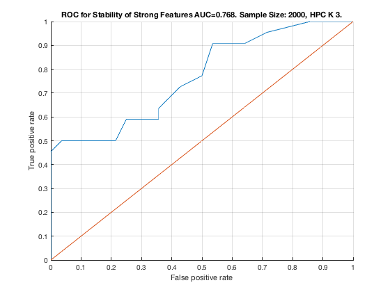

Feature Stability of HPC_K_3 on TieNet with 2000 samples.
unit_stability_type(2000, 1, "TieNet")
Figure 9. ROC for Stability of Strong Features AUC=0.768. Sample Size: 2000, HPC K 3. ______________________________________________________________________________________
Table 9. Feature Stability of HPC K 3 on TieNet with 2000 samples.
___________________________________________________________________
SELECTED COUNTS: Strong=22, Weak=24, Irrelevant=4
TOTAL COUNTS: Strong=23, Weak=26, Irrelevant=4
Feature_Number Stability Type Path_Length N_MBS Equivalence
______________ _________ ____________ ___________ _____ ___________
23 ' 0.550 ' ' STRONG ' 3 0 21
20 ' 0.490 ' ' STRONG ' 3 0 18
22 ' 0.312 ' ' STRONG ' 2 0 21
19 ' 0.234 ' ' STRONG ' 2 0 18
18 ' 0.138 ' ' STRONG ' 1 0 18
21 ' 0.138 ' ' STRONG ' 1 0 21
11 ' 0.114 ' ' STRONG ' 4 0 7
6 ' 0.086 ' ' STRONG ' 3 0 1
10 ' 0.068 ' ' STRONG ' 4 0 7
5 ' 0.062 ' ' STRONG ' 3 0 1
17 ' 0.056 ' ' STRONG ' 4 36 12
38 ' 0.056 ' ' weak ' 5 36 38
28 ' 0.052 ' ' weak ' 5 36 28
33 ' 0.046 ' ' weak ' 8 36 33
37 ' 0.046 ' ' weak ' 6 36 37
29 ' 0.036 ' ' weak ' 11 36 29
49 ' 0.036 ' ' weak ' 6 36 49
3 ' 0.034 ' ' STRONG ' 4 54 1
4 ' 0.034 ' ' STRONG ' 4 72 1
39 ' 0.034 ' ' weak ' 4 72 39
46 ' 0.032 ' ' weak ' 7 72 46
42 ' 0.030 ' 'irrelevant' Inf 72 42
51 ' 0.028 ' ' weak ' 4 72 51
9 ' 0.026 ' ' STRONG ' 3 108 7
16 ' 0.024 ' ' STRONG ' 2 216 12
40 ' 0.024 ' ' weak ' 3 216 40
13 ' 0.020 ' ' STRONG ' 2 324 12
36 ' 0.020 ' ' weak ' 8 324 36
2 ' 0.018 ' ' STRONG ' 2 405 1
43 ' 0.018 ' 'irrelevant' Inf 405 43
52 ' 0.018 ' ' weak ' 4 405 52
7 ' 0.016 ' ' STRONG ' 1 540 7
8 ' 0.016 ' ' STRONG ' 2 675 7
15 ' 0.016 ' ' STRONG ' 3 900 12
26 ' 0.016 ' ' weak ' 5 900 26
24 ' 0.014 ' ' weak ' 4 900 24
47 ' 0.014 ' 'irrelevant' Inf 900 47
53 ' 0.014 ' ' weak ' 5 900 53
14 ' 0.008 ' ' STRONG ' 3 1125 12
32 ' 0.008 ' ' weak ' 8 1125 32
50 ' 0.008 ' ' weak ' 5 1125 50
12 ' 0.006 ' ' STRONG ' 1 1350 12
30 ' 0.006 ' ' weak ' 10 1350 30
44 ' 0.006 ' 'irrelevant' Inf 1350 44
45 ' 0.006 ' ' weak ' 7 1350 45
48 ' 0.006 ' ' weak ' 6 1350 48
41 ' 0.004 ' ' weak ' 3 1350 41
25 ' 0.002 ' ' weak ' 6 1350 25
31 ' 0.002 ' ' weak ' 9 1350 31
34 ' 0.002 ' ' weak ' 8 1350 34